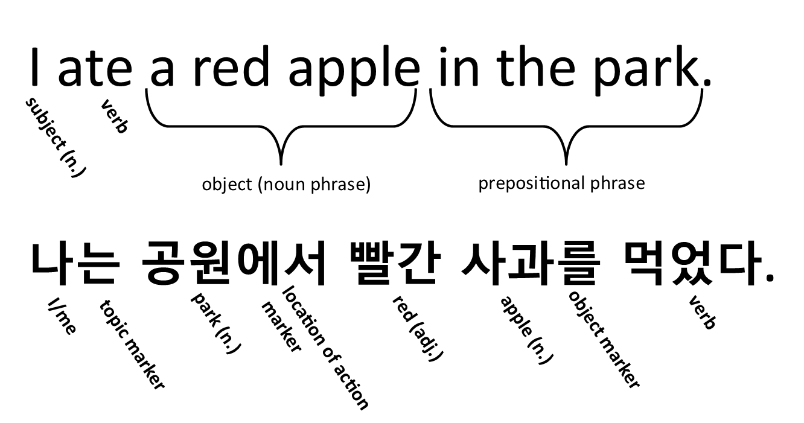

Learning Korean is a real adventure and provides an absolutely intriguing and mind-expanding take on communication. Korean is fascinating because Korean and English grammar are about as different as kimchi and cupcakes. To paraphrase a friend of mine who used to teach Korean, “Korean is upside down, inside out, and backwards from English.” But hey, no pain no gain, right? Let's look at an example.
 Tap to enlarge. Rotate screen horizontally to enlarge further.You'll note that in Korean the verb comes at the end! Your brain, however, is an incredible tool, and I am confident that with persistence, what may initially seem baffling is actually going to become very easy. Soon you'll be listenting to these backwards sentences like a champ. You may even catch yourself saying things like, “Dang, why is English so hard? It’s much better to do this the Korean way!”
What’s more is that we’re going to do this the easy way. We'll explain everything clearly and give a ton of examples as we go along. You’ll have native pronunciation for every example sentence provided, and you can break down every sentence to see all the parts in it. We’ll start from the bottom and work our way up, alternating frequently between reviewing and learning new content. That way you can keep learning quickly while solidifying what you have already learned. We’ll continually identify patterns and draw comparisons, thus, unraveling the seemingly complex code of Korean communication into manageable bite-size chunks.